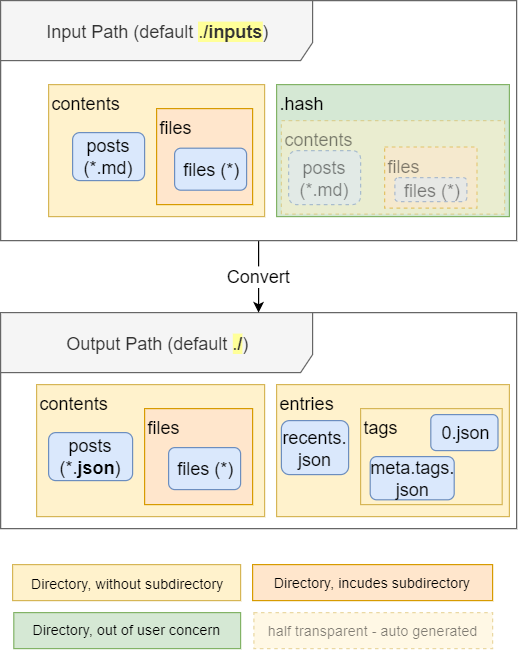

File Structure

Input path
- Contents (
(input path)/contents/): The post titles, contents and tags, written in md-like format. Note that it's NOT 100% valid MD file and must contain tags in first line!- Files (
(input path)/contents/files): includes files. This can be any file, e.g. image files. You can make subdirectory to the files to categorize.
- Files (
Output path
Output path contains JSON file formats.
- Contents (
(output path)/contents/): This contains JSON data of the post - Title, content, creation date, modification date and tags.- Files (
(output path)/contents/files): Are just copied from(input path)/contents/files.
- Files (
- Entries (
(output path)/entries/): The metadata and summary of the post.recent.json: shows recent posts, by creation date order. Note that it reads creation and modification date from the original file info.- Tags (
(output path)/entries/tags): Contains information of tags of the post.meta.tags.json: The metadata of the tag. This contains link to the tag data, and how many posts in the tag. This is useful for creating tag cloud.
You can read more about output file format from here.
The auto generated part
- Hash (
(input path)/contents/.hash): This contains sipmle checksum to check if the file has been changed. This exists for boosting converting speed. Removing files in this directory may slow down the speed a bit, but shouldn't affect so much for entire app.